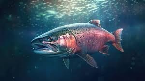

El salmón es un pez que vive en el océano pero que nada río arriba para reproducirse. Es conocido por su gran capacidad para nadar largas distancias y por su importancia en la alimentación humana.

• Vive en aguas frías del océano Atlántico y Pacífico.
• Puede nadar contra fuertes corrientes.
• Su color suele ser plateado con tonos rosados.
• Puede medir entre 50 centímetros y más de 1 metro.
Los salmones nacen en ríos de agua dulce, luego migran al océano para crecer y finalmente regresan al mismo río donde nacieron para poner sus huevos. Este viaje puede recorrer cientos o incluso miles de kilómetros.